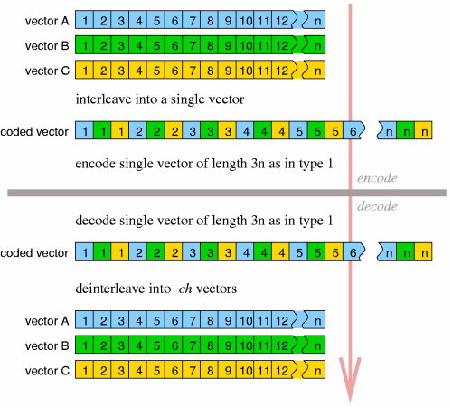

Whatever the exact qualities, the Vorbis residue abstraction codes the residue vectors into the bitstream packet, and then reconstructs the vectors during decode. Vorbis makes use of three different encoding variants (numbered 0, 1 and 2) of the same basic vector encoding abstraction.
A set of coded residue vectors are all of the same length. High level coding structure, ignoring for the moment exactly how a partition is encoded and simply trusting that it is, is as follows:

Residue encoding 0 interleaves VQ encoding according to the dimension of the codebook used to encode a partition in a specific pass. The dimension of the codebook need not be the same in multiple passes, however the partition size must be an even multiple of the codebook dimension.
As an example, assume a partition vector of size eight, to be encoded by residue 0 using codebook sizes of 8, 4, 2 and 1:
original residue vector: [ 0 1 2 3 4 5 6 7 ]
codebook dimensions = 8 encoded as: [ 0 1 2 3 4 5 6 7 ]
codebook dimensions = 4 encoded as: [ 0 2 4 6 ], [ 1 3 5 7 ]
codebook dimensions = 2 encoded as: [ 0 4 ], [ 1 5 ], [ 2 6 ], [ 3 7 ]
codebook dimensions = 1 encoded as: [ 0 ], [ 1 ], [ 2 ], [ 3 ], [ 4 ], [ 5 ], [ 6 ], [ 7 ]
It is worth mentioning at this point that no configurable value in the
residue coding setup is restricted to a power of two.
original residue vector: [ 0 1 2 3 4 5 6 7 ]
codebook dimensions = 8 encoded as: [ 0 1 2 3 4 5 6 7 ]
codebook dimensions = 4 encoded as: [ 0 1 2 3 ], [ 4 5 6 7 ]
codebook dimensions = 2 encoded as: [ 0 1 ], [ 2 3 ], [ 4 5 ], [ 6 7 ]
codebook dimensions = 1 encoded as: [ 0 ], [ 1 ], [ 2 ], [ 3 ], [ 4 ], [ 5 ], [ 6 ], [ 7 ]

1) [residue_begin] = read 24 bits as unsigned integer 2) [residue_end] = read 24 bits as unsigned integer 3) [residue_partition_size] = read 24 bits as unsigned integer and add one 4) [residue_classifications] = read 6 bits as unsigned integer and add one 5) [residue_classbook] = read 8 bits as unsigned integer[residue_begin] and [residue_end] select the specific sub-portion of each vector that is actually coded; it implements akin to a bandpass where, for coding purposes, the vector effectively begins at element [residue_begin] and ends at [residue_end]. Preceding and following values in the unpacked vectors are zeroed. Note that for residue type 2, these values as well as [residue_partition_size]apply to the interleaved vector, not the individual vectors before interleave. [residue_partition_size] is as explained above, [residue_classifications] is the number of possible classification to which a partition can belong and [residue_classbook] is the codebook number used to code classification codewords. The number of dimensions in book [residue_classbook] determines how many classification values are grouped into a single classification codeword.
Next we read a bitmap pattern that specifies which partition classes code values in which passes.
1) iterate [i] over the range 0 ... [residue_classifications]-1 {
2) [high_bits] = 0
3) [low_bits] = read 3 bits as unsigned integer
4) [bitflag] = read one bit as boolean
5) if ( [bitflag] is set ) then [high_bits] = read five bits as unsigned integer
6) vector [residue_cascade] element [i] = [high_bits] * 8 + [low_bits]
}
7) done
Finally, we read in a list of book numbers, each corresponding to
specific bit set in the cascade bitmap. We loop over the possible
codebook classifications and the maximum possible number of encoding
stages (8 in Vorbis I, as constrained by the elements of the cascade
bitmap being eight bits):
1) iterate [i] over the range 0 ... [residue_classifications]-1 {
2) iterate [j] over the range 0 ... 7 {
3) if ( vector [residue_cascade] element [i] bit [j] is set ) {
4) array [residue_books] element [i][j] = read 8 bits as unsigned integer
} else {
5) array [residue_books] element [i][j] = unused
}
}
}
6) done
An end-of-packet condition at any point in header decode renders the
stream undecodable. In addition, any codebook number greater than the
maximum numbered codebook set up in this stream also renders the
stream undecodable.
In addition to configuration information, the residue decode process is passed the number of vectors in the submap bundle and a vector of flags indicating if any of the vectors are not to be decoded. If the passed in number of vectors is 3 and vector number 1 is marked 'do not decode', decode skips vector 1 during the decode loop. However, even 'do not decode' vectors are allocated and zeroed.
The following convenience values are conceptually useful to clarifying the decode process:
1) [classvals_per_codeword] = [codebook_dimensions] value of codebook [residue_classbook] 2) [n_to_read] = [residue_end] - [residue-begin] 3) [partitions_to_read] = [n_to_read] / [residue_partition_size]Packet decode proceeds as follows, matching the description offered earlier in the document. We assume that the number of vectors being encoded, [ch] is provided by the higher level decoding process.
1) allocate and zero all vectors that will be returned.
2) iterate [pass] over the range 0 ... 7 {
3) [partition_count] = 0
4) if ([pass] is zero) {
5) iterate [j] over the range 0 .. [ch]-1 {
6) if vector [j] is not marked 'do not decode' {
7) [temp] = read from packet using codebook [residue_classbook] in scalar context
8) iterate [k] descending over the range [classvals_per_codeword]-1 ... 0 {
9) array [classifications] element [j],([partition_count]+[k]) =
[temp] integer modulo [residue_classifications]
10) [temp] = [temp] / [residue_classifications] using integer division
}
}
}
}
11) [classword_count] = 0
12) iterate [j] over the range 0 .. [ch]-1 {
13) if vector [j] is not marked 'do not decode' {
14) [vqclass] = array [classifications] element [j],([partition_count]+[classword_count])
15) [vqbook] = array [residue_books] element [vqclass],[pass]
16) if ([vqbook] is not 'unused') {
17) decode partition into output vector number [j], starting at scalar
offset [residue_begin]+[partition_count]*[residue_partition_size] using
codebook number [vqbook] in VQ context
}
}
}
18) increment [classword_count]
19) increment [partition_count]
20) if ([classword_count] is less than [classvals_per_codeword]) AND
([partition_count] is less than [partitions_to_read) then continue at step 11
21) if ([partition_count] is less than [partitions_to_read) then continue at step 4
}
22) done
An end-of-packet condition during packet decode is to be considered a
nominal occurrence. Decode returns the result of vector decode up to
that point.
1) [step] = [n] / [codebook_dimensions]
2) iterate [i] over the range 0 ... [step]-1 {
3) vector [entry_temp] = read vector from packet using current codebook in VQ context
4) iterate [j] over the range 0 ... [codebook_dimensions]-1 {
5) vector [v] element ([offset]+[i]+[j]*[step]) =
vector [v] element ([offset]+[i]+[j]*[step]) +
vector [entry_temp] element [j]
}
}
6) done
1) [i] = 0
2) vector [entry_temp] = read vector from packet using current codebook in VQ context
3) iterate [j] over the range 0 ... [codebook_dimensions]-1 {
5) vector [v] element ([offset]+[i]) =
vector [v] element ([offset]+[i]) +
vector [entry_temp] element [j]
6) increment [i]
}
4) if ( [i] is less than [n] ) continue at step 2
5) done
1) iterate [i] over the range 0 ... [n]-1 {
2) iterate [j] over the range 0 ... [ch]-1 {
3) output vector number [j] element [i] = vector [t] element ([i] * [ch] +[j])
}
}
4) done
Format 2 handles 'do not decode' vectors differently that residue 0 or 1; if all vectors are marked 'do not decode', no decode occurrs. However, if at least one vector is to be decoded, all the vectors are decoded.
 Ogg is a Xiph.org Foundation effort
to protect essential tenets of Internet multimedia from corporate
hostage-taking; Open Source is the net's greatest tool to keep
everyone honest. See About
the Xiph.org Foundation for details.
Ogg is a Xiph.org Foundation effort
to protect essential tenets of Internet multimedia from corporate
hostage-taking; Open Source is the net's greatest tool to keep
everyone honest. See About
the Xiph.org Foundation for details.
Ogg Vorbis is the first Ogg audio CODEC. Anyone may freely use and distribute the Ogg and Vorbis specification, whether in a private, public or corporate capacity. However, the Xiph.org Foundation and the Ogg project (xiph.org) reserve the right to set the Ogg Vorbis specification and certify specification compliance.
Xiph.org's Vorbis software CODEC implementation is distributed under a BSD-like license. This does not restrict third parties from distributing independent implementations of Vorbis software under other licenses.
Ogg, Vorbis, Xiph.org Foundation and their logos are trademarks (tm) of the Xiph.org Foundation. These pages are copyright (C) 1994-2002 Xiph.org Foundation. All rights reserved.